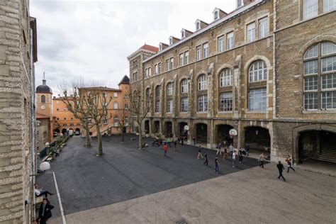
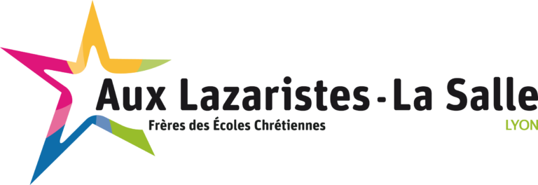
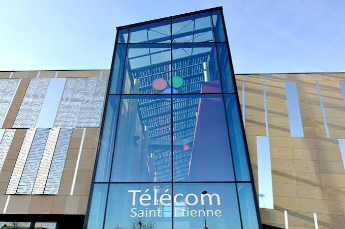

Une semaine dans un atelier d'usinage.
Mon stage d'observation chez DLO Indus, à Lyon, me fait découvrir la fabrication de précision et les contraintes de la production industrielle. Premier contact avec un monde où chaque cote compte.
Disponible · stage de 11 semaines dès le 12 avril 2027
Bonjour, je suis Lucas.
Étudiant en deuxième année de BUT Mesures Physiques, en double cursus avec la prépa ingénieur CITISE de Télécom Saint-Étienne. Je recherche un stage de technicien en instrumentation et métrologie.
En quelques mots
Lyonnais d'origine, étudiant à Saint-Étienne, je mène deux formations de front. Ce qui m'anime : comprendre comment on sait qu'une mesure est juste, puis l'expliquer simplement. Le reste du temps, je joue aux échecs, je suis l'OL et je reste fasciné par la chimie des parfums.
Parcours
Mon stage d'observation chez DLO Indus, à Lyon, me fait découvrir la fabrication de précision et les contraintes de la production industrielle. Premier contact avec un monde où chaque cote compte.
J'étudie au lycée Aux Lazaristes – La Salle, établissement des Frères des Écoles chrétiennes sur le site de Fourvière, régulièrement cité parmi les meilleurs lycées de Lyon. J'y apprends à travailler avec méthode et régularité, je choisis les spécialités mathématiques et physique-chimie, et j'obtiens mon baccalauréat général en juillet 2024.


Je choisis un double cursus : le BUT Mesures Physiques à l'IUT de Saint-Étienne et la prépa intégrée CITISE de Télécom Saint-Étienne, menés en parallèle, avec le cycle ingénieur en ligne de mire. Deux emplois du temps, deux diplômes, une même question : comment prouver qu'une mesure est juste ?

Je conçois un outil Excel qui calcule automatiquement l'incertitude d'une chaîne de mesure selon le GUM, puis je dirige le projet d'application WinDev pour apprendre l'anglais. En TP, je découvre le vide secondaire, LabVIEW et la spectrophotométrie. Depuis septembre 2026, j'accompagne aussi chaque semaine des étudiants de première année.
Un stage de technicien en instrumentation et métrologie de 11 semaines, à partir du 12 avril 2027, à Lyon, à Saint-Étienne ou en Île-de-France.
Ma méthode
Choisir et mettre en œuvre le capteur : thermocouple, PT100, capteur de force, capteur de distance.
Conditionner le signal, l'acquérir et le traiter sous LabVIEW ; instruments de mesure électrique au banc.
Raccorder aux étalons et faire le bilan d'incertitudes selon le GUM, avec le vocabulaire du VIM.
Écrire le résultat avec son incertitude élargie, rédiger la procédure ou le certificat d'étalonnage.
Démonstration interactive
En projet de métrologie, j'ai étudié un capteur de distance à l'aide de cales étalons et conçu un outil Excel qui calculait automatiquement l'incertitude. Voici le même raisonnement, en version web. Modifiez les valeurs : tout se recalcule.
Résultat de mesure
– ± – mm
Les barres montrent la part de chaque source dans la variance. Le résultat est arrondi à deux chiffres significatifs sur l'incertitude.
Projets
Modélisation de la chaîne de mesure, bilan d'incertitudes selon la méthode GUM, puis conception d'un outil Excel qui calcule automatiquement l'incertitude à partir des mesures saisies.
Application mobile ludo-éducative développée sous WinDev en 2026 : quatre niveaux de difficulté, tirage aléatoire des mots, système de points, bases de données des joueurs et des scores, mode administrateur. J'ai planifié, coordonné et supervisé l'équipe, du choix du projet à la démo finale.
Depuis septembre 2026, j'accompagne chaque semaine 2 à 5 étudiants de première année dans leurs matières scientifiques. Expliquer simplement une notion difficile, c'est la même exigence qu'écrire une procédure claire.
Au laboratoire
Pompes sèches et pompe turbomoléculaire, pour atteindre un vide primaire puis secondaire.
Acquisition et traitement de données : TP notés en fin de première année, et en mécanique des fluides cette année.
Mesure de l'absorbance de solutions plus ou moins diluées et tracé de leurs spectres.
Rédaction d'un certificat d'étalonnage, exercice évalué en BUT Mesures Physiques ; utilisation de masses étalons.
Thermocouple, PT100, capteur de force ; colonne de mesure et pied à coulisse.
Oscilloscope, multimètre, wattmètre et générateurs ; analyse de circuits, moteurs électriques.
Compétences
En dehors du labo
Parfumerie et cosmétique
Une envie de longue date, confirmée par la visite des usines de parfumerie Fragonard à Grasse. Je m'intéresse aussi à la mode.
Échecs · Gambit dame
Un jeu que j'adore.
Football
Mon sport favori, pratiqué un an en club.
Guitare
Sports
Stage de technicien en instrumentation et métrologie, 11 semaines à partir du 12 avril 2027. Lyon, Saint-Étienne ou Île-de-France.
lucas.lozano@etu.univ-st-etienne.fr